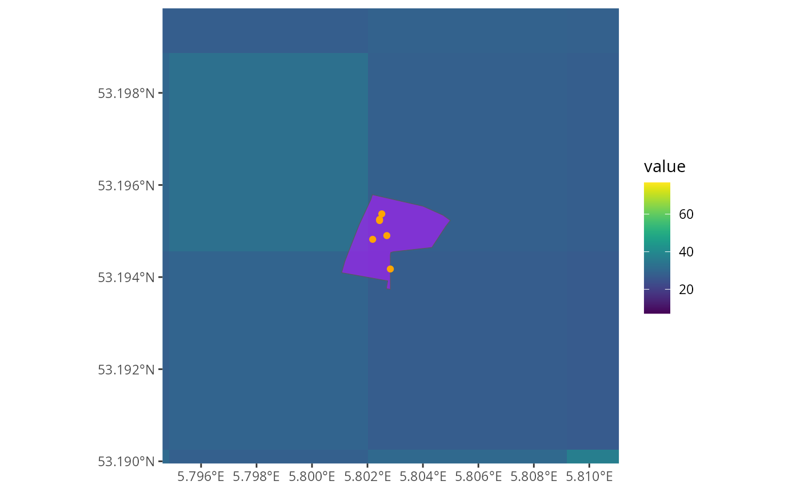

:construction: UNDER CONSTRUCTION :construction:
This article is incomplete!
Spacial plotting
The data postcodElapse handles inherently has an spacial component so
plotting the data is of interest in some cases. There is one problem
tough base R plotting doesn’t handle spacial data well. I recommend you
install the tidyverse and tidyterra packages,
this equips us with ggplot2 and tidyterra enhances ggplot2 with spacial
plotting.
ELAPSE
Remember I said terra models air pollution concentration across Europe, well lets plot the internal one and took at the structure. See below.
# Remember to install these!
library(tidyverse)
library(tidyterra)
elapse <- loadElapse()
ggplot() +
geom_spatraster(data = elapse) +
facet_wrap(~ lyr)
#> <SpatRaster> resampled to 500490 cells.
We can see the shape of the Netherlands well, if you want to change
the fill colour I recommend reading the docs of
?tidyterra::scale_fill_grass_c. Before we plot the location
of postcodes on top of ELAPSE, I am going to explain the
pollutionFrom*() functions.
PollutionFrom*()
The pollutionFrom*() functions do the estimating of
air-quality for postcodes, they are of course specific to BAG or PC6.
More importantly they output spacial data, postcodElapse()
removes that. First lets look at the spacial data from PC6.
pollutionFromPc6("9713AV", "../../../data/cbs_pc6_2024.gpkg")
#> Guessed db type to be: PC6
#> Simple feature collection with 1 feature and 20 fields
#> Geometry type: MULTIPOLYGON
#> Dimension: XY
#> Bounding box: xmin: 234015.1 ymin: 582553.7 xmax: 234196 ymax: 582720.1
#> Projected CRS: Amersfoort / RD New
#> postcode n BCFULL_avg NO2FULL_avg O3FULLa_avg O3FULLc_avg O3FULLw_avg
#> 1 9713AV NA 1.87643 31.3348 59.92856 44.74765 77.72683
#> PM25FULLt_avg BCFULL_min NO2FULL_min O3FULLa_min O3FULLc_min O3FULLw_min
#> 1 15.53723 1.874042 31.10718 59.8123 44.69811 77.5975
#> PM25FULLt_min BCFULL_max NO2FULL_max O3FULLa_max O3FULLc_max O3FULLw_max
#> 1 15.4238 1.878818 31.56242 60.04483 44.7972 77.85616
#> PM25FULLt_max geom
#> 1 15.65066 MULTIPOLYGON (((234060.7 58...As you see it looks like the output from postcodElapse()
but it has extra data. All the Simple features collecto...
stuff is metadata describing the coordinate system, you don’t have to
worry about this unless you need to modify it. In the data itself the
extra column geom exists, it contains the physical area
of an postcode. Now lets look at BAG
data <- pollutionFromBag("9714AV", "../../../data/bag-light.gpkg")
#> Guessed db type to be: BAG
head(data, 4)
#> ID BCFULL NO2FULL O3FULLa O3FULLc O3FULLw PM25FULLt postcode
#> 1 1 1.780593 29.27458 61.25306 45.00510 78.46283 14.91388 9714AV
#> 2 2 1.780593 29.27458 61.25306 45.00510 78.46283 14.91388 9714AV
#> 3 3 1.780593 29.27458 61.25306 45.00510 78.46283 14.91388 9714AV
#> 4 4 1.793867 29.55525 61.25234 45.05892 78.62730 15.18978 9714AV
#> geom
#> 1 POINT (233671 582898.5)
#> 2 POINT (233667.3 582905.1)
#> 3 POINT (233680 582881.2)
#> 4 POINT (233657.3 582919.4)BAG has way less columns than PC6 that is due to bag containing
points. It is not practical to convert points to areas. So I built
pollutionFromBag() to output the raw data collected from
BAG and ELAPSE. It does provide a-lot more rows one per building in a
postcodes for all postcodes. The geom column contains effectively the
geo-graphic position of a building.
Plotting
Now we understand the pollutionFrom*() functions we do
some spacial plotting with layers. I have selected some postcodes form
public locations across the Netherlands and we are going to plot then on
ELAPSE.
postcodes <- c("9714AV", "1071XX", "8934CJ", "1789AX")
elapse <- loadElapse()
pc6 <- pollutionFromPc6(postcodes, "../../../data/cbs_pc6_2024.gpkg")
#> Guessed db type to be: PC6
bag <- pollutionFromBag(postcodes, "../../../data/bag-light.gpkg")
#> Guessed db type to be: BAG
ggplot() +
geom_spatraster(data = elapse$NO2FULL) +
geom_sf(data = pc6, aes(geometry = geom), fill = "purple", alpha = 0.7) +
geom_sf(data = bag, aes(geometry = geom), colour = "orange") +
scale_fill_grass_c()
#> <SpatRaster> resampled to 500490 cells.
Oke we can see ELAPSE and see orange points, where are the purple areas? And shouldn’t there be many points? They are both in the plot just very small and fighting over the same space. Lets zoom in on the Rijskmuseum the 1st postcode. Postcodes are always output in alpha numecic fastion!
postcodes <- c("9714AV", "1071XX", "8934CJ", "1789AX")
elapse <- loadElapse()
pc6 <- pollutionFromPc6(postcodes, "../../../data/cbs_pc6_2024.gpkg")
#> Guessed db type to be: PC6
bag <- pollutionFromBag(postcodes, "../../../data/bag-light.gpkg")
#> Guessed db type to be: BAG
ggplot() +
geom_spatraster(data = elapse$NO2FULL) +
geom_sf(data = pc6, aes(geometry = geom), fill = "purple", alpha = 0.7) +
geom_sf(data = bag, aes(geometry = geom), colour = "orange") +
coord_zoomFeature(pc6[1]) +
scale_fill_grass_c()
#> <SpatRaster> resampled to 500490 cells.